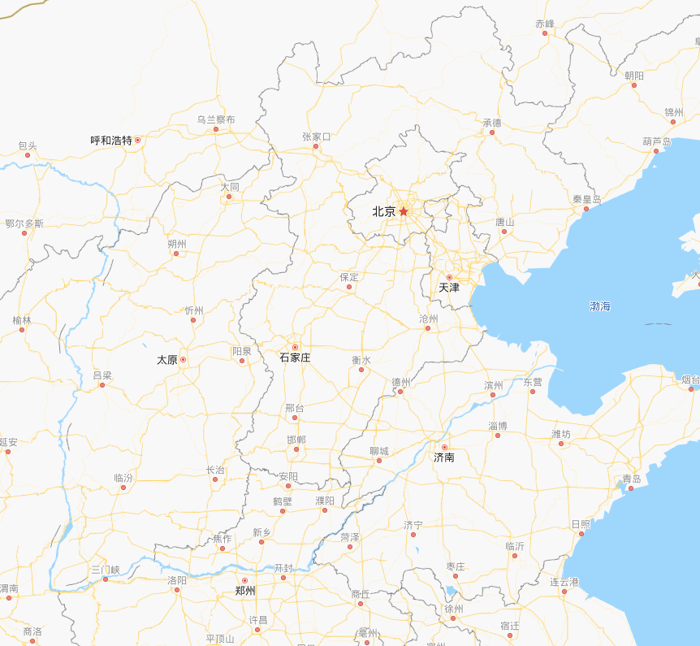
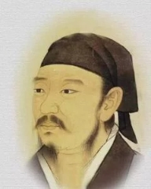
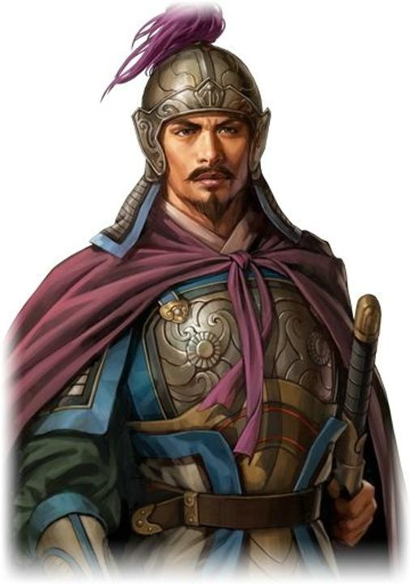
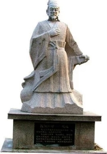
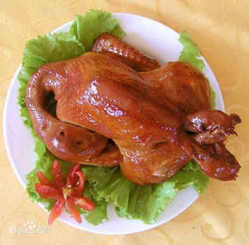
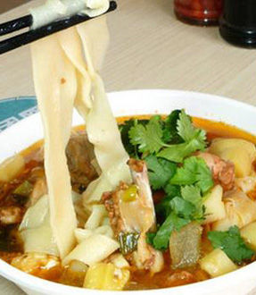
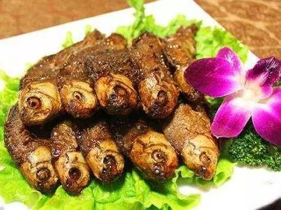

邯郸 河北省省辖市，位于河北省南端，太行山东麓，西依太行山脉，东接华北平原，与晋、鲁、豫三省接壤，是国务院批准具有地方立法权的“较大的市”和市区人口超百万的大城市。全市现辖6区、1市、11县，1个国家级开发区和1个省级开发区，总面积12073.8平方公里，总人口1051.45万人；主城区面积2661.83平方公里，人口367.42万人。邯郸位于晋冀鲁豫四省要冲和中原经济区腹心，有3100年的建城史。邯郸是华北地区和晋冀鲁豫四省区域重要的交通枢纽，境内铁路、高速公路、国道和各等级公路纵横交错，形成了发达的交通网络，交通便捷。邯郸是晋冀鲁豫四省交界区域唯一具备铁路、公路、航空的城市。邯郸是国家历史文化名城，8000年前孕育了新石器早期的磁山文化；战国邯郸为赵国都城，魏县为魏国都城； 汉代与洛阳、临淄、南阳、成都共享“五大都会”盛名； 汉末曹魏在临漳建都， 先后为曹魏、冉魏、前燕、东魏、北齐都城；北宋，大名府成为北宋陪都；清代，大名府为直隶省第一省。邯郸是国家园林城市、中国优秀旅游城市、全国绿化模范城市、全国双拥模范城市、全国社会治安综合治理优秀城市和中国成语典故之都，拥有涉县娲皇宫、广府古城2处5A级景区。

荀子（约公元前313年－公元前238年），名况，字卿，华夏族（汉族），战国末期赵国人 [1-7] 。著名思想家、文学家、政治家，世人尊称“荀卿”。西汉时因避汉宣帝刘询讳，因“荀”与“孙”二字古音相通，故又称孙卿。曾三次出任齐国稷下学宫的祭酒，后为楚兰陵令。

乐毅（yuè yì），生卒年不详，子姓，乐氏，名毅，字永霸。中山灵寿人，战国后期杰出的军事家、战略家，魏将乐羊后裔，拜燕上将军，受封昌国君，辅佐燕昭王振兴燕国。

蔺相如原为宦者令缪贤的舍人。赵惠文王时，秦昭王写信给赵王，愿以十五个城池换取“和氏璧”。蔺相如奉命带“和氏璧”来到秦国，据理力争，机智周旋，终于完璧归赵。公元前279年，秦王与赵王相会于渑池（今河南渑池西），他随侍赵惠文王，当面斥责强大的秦国，不辱国体，使赵王没有受到屈辱，因其功，任为上卿，居官于廉颇之上。廉颇居功自恃，不服相如，耻居其下，并扬言要羞辱相如。蔺相如为保持将相和睦，不使外敌有隙可乘，始终回避忍让。蔺相如以国家利益为重、善自谦抑的精神感动了廉颇，于是亲自到蔺相如府上负荆请罪，二人成为刎颈之交。
京娘湖位于河北省邯郸市武安市口上村北，亦称口上水库。 是太行山脉腹地。 京娘湖顾名思义因湖水而著名，湖面呈倒"人"字型，分东西两支，长短各3公里。 这里山水环绕，群峰竞秀，层峦叠嶂，川谷深幽，赤壁丹崖，色彩斑斓，林木茂盛，波光粼粼，风景秀美，造化神奇。 现已凭借其中山川水色开辟成为旅游风景区和避暑胜地。 据史料记载，赵匡胤千里送京娘的故事便发生在这里。 京娘湖因宋太祖送京娘的故事发生在这一带，故得此名。
今日之邯郸，是一座被遗忘的美食之都！ 三千年浮浮沉沉， 邯郸光荣过、失落过， 如今，她回归到一个“普通”的中原城市。 但她却没有贩卖自己的历史情结， 而是将味道融入美食里， 千年传承，历久弥新， 一口下去，都是一种非遗！



二毛烧鸡原名珍积成烧鸡，是河北省邯郸市的传统名菜，中华老字号之一，属于冀菜系。此菜被载入国家级史册《辞海》“八大地方风味美食”大名“二五八”之首，邯郸十大名小吃。是大名县传统的名贵食品，长期以来远近闻名，享有盛誉。
武安拉面是河北邯郸市著名的小吃。面条筋道、口感柔润爽滑。据传起始于清末民初。武安拉面有三种：勾面、拽面、空心面。勾面呈圆形，拽面呈扁形，空心面外圆内空。武安拉面的特点是筋抖、柔润、滑爽。2003年，武安拉面被邯郸市评为“地方十大名小吃”。
小黄鱼为暖温性底层结群洄游鱼类。一般栖息于软泥或泥沙质海区，其垂直移动现象，会进入河口区。厌强光，喜混浊水流，黄昏时上升，黎明时下降，白天常栖息于底层或近底层。主要食物为浮游甲壳类，也捕食十足类和其他幼鱼。分布于西北太平洋区，包括中国、朝鲜、韩国沿海。在中国分布于渤海、东海及黄海南部。
|联系我们| |河北工程技术学院| |版权所有| |禁止盗窃|